La médecine factuelle
Motivations, définition.
Aurélien Madouasse
2024-09-02
A propos
Ce document constitue le support d’un cours à destination des étudiants vétérinaires de 5\(^{ème}\) année d’Oniris VetAgroBio.
Des informations complémentaires sont disponibles dans le document intitulé Introduction à la médecine factuelle rédigé avec Raphaël Guatteo et disponible à l’adresse suivante : https://aurmad.github.io/medecine_factuelle/.
Objectifs pédagogiques
A l’issue de ce cours, vous devez être capables de :
- justifier l’intérêt d’une approche factuelle pour répondre à une question clinique précise
- définir médecine factuelle et lister les 5 étapes de la démarche
- donner des exemples de facteurs qui contribuent à l’illusion de causalité
- expliquer ce qu’est un biais cognitif
- expliquer ce qu’est une valeur de p (\(p-value\)) dans le cadre d’un test d’hypothèse
3 exemples pour comprendre les enjeux
La mort de George Washington
Source : Washington on his Deathbed, J.B Stearns, 1851
La mort de George Washington
- George Washington = premier président des Etats-Unis d’Amérique
- Le 13 décembre 1799 :
- se réveille avec un mal de gorge,
- on lui pratique une saignée (1/3 de litre)
- 14 décembre :
- saignée 1/2 L en début de matinée puis 1/2 L à 11h
- saignée 1 L dans l’après-midi, puis une autre (?) plus tard dans l’après-midi
- meurt dans la nuit
- Volume total de sang prélevé estimé à ~ 2,5 L (82 oz)
La saignée, comment ça marche ?
- Théorie grecque des humeurs1 :
- les maladies seraient dues à un déséquilibre dans les 4 humeurs : sang, lymphe, bile jaune, bile noire
- La saignée consistait à prélever du sang, probablement pour rééquilibrer les humeurs
La saignée, est-ce que ça marche ?
- A probablement précipité la mort de George Washington, et celle de nombreux autres patients.
- Indiquée pour certaines pathologies spécifiques (hémochromatose, maladie de Vasquez, porphyrie).
- Procès contemporain de la mort de Washington sur l’efficacité de la saignée1
- Opposait un journaliste (W. Cobett) à un médecin (B. Rush)
- Rush a poursuivi Cobett pour diffamation
- Notamment, après examen des registres de décès de la ville de Philadelphie, Cobett avait noté une augmentation de mortalité associée aux saignées pratiquées par les collègues de Rush
- Rush a gagné son procès
Oscillococcinum
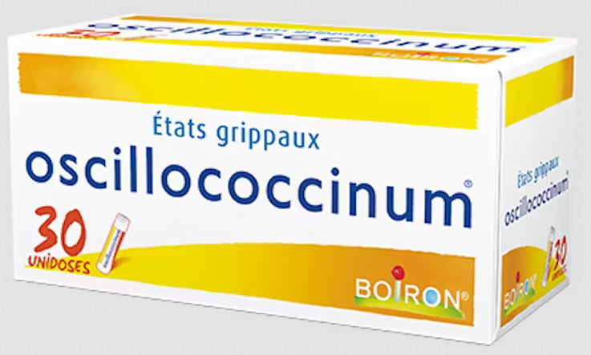Source : Boiron
Oscillococcinum : un traitement homéopathique contre la grippe
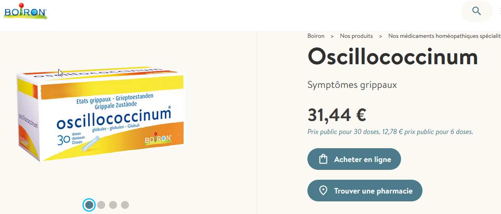 Source : boiron.be, août 2024
Oscillococcinum : un traitement homéopathique contre la grippe
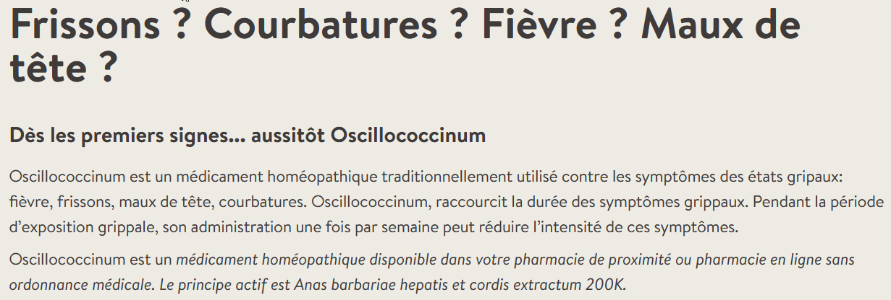 Source : boiron.be, août 2024
Principes de l’homéopathie
- Administration d’une substance qui induit les mêmes (homéo-) symptômes que la maladie qu’on souhaite combattre, très fortement diluée
- Préparation d’une teinture mère à partir de cette substance
- Dilution dans un solvant (eau ou alcool). Différents types de dilution dont CH (centésimales hahnemanniennes), K (korsakovienne)…
- Dynamisation (= succussion)
- +/- déshydratation \(\rightarrow\) granules
- Administration au patient
Oscillococcinum : comment ça marche ?
Principe actif : extrait fluide peptoné de foie et de coeur d’Anas barbariae dynamisé à la 200e K
K = dilution korsakovienne
- 1 K : diluer la teinture mère à 1% dans un flacon, agiter (= dynamisation),
- 2 K : vider le flacon, remplir le flacon précédemment vidé avec du solvant, agiter,
- 3 K : vider le flacon, remplir le flacon précédemment vidé avec du solvant, agiter,
- …
- 200 K : vider le flacon, remplir le flacon avec du solvant, agiter.
Pourquoi le canard ?
- Joseph Roy1, médecin militaire pendant la première guerre mondiale :
- observe (?) au microscope un micro-organisme qui oscille rapidement, qu’il nomme oscillocoque,
- dans le sang de patients atteints de la grippe,
- puis dans le sang et les tumeurs de cancéreux,
- puis finalement un peu partout,
- choisit de faire une préparation homéopathique à base de foie et de cœur de canard 🤷
Oscillococcinum : est-ce que ça marche ?
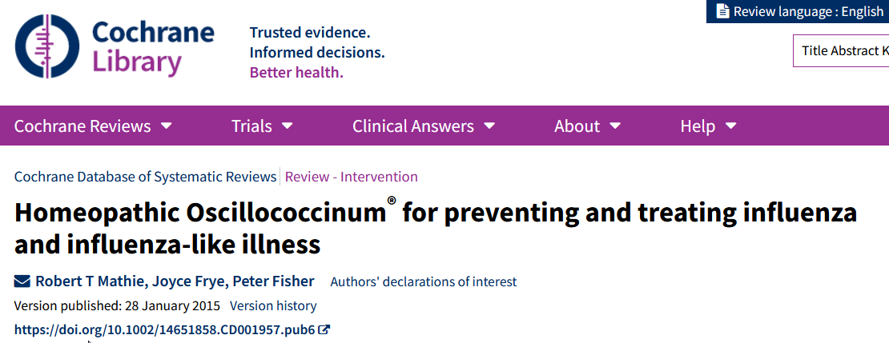
Oscillococcinum : est-ce que ça marche ?
Authors’ conclusions:
- There is insufficient good evidence to enable robust conclusions to be made about Oscillococcinum® in the prevention or treatment of influenza and influenza‐like illness. Our findings do not rule out the possibility that Oscillococcinum® could have a clinically useful treatment effect but, given the low quality of the eligible studies, the evidence is not compelling. There was no evidence of clinically important harms due to Oscillococcinum®.
Ce qui veut dire :
- Il n’y a aucune indication que ce soit efficace.
- Les études étant de mauvaise qualité, on ne peut rien exclure.
- Si ça ne fait pas de bien, ça ne fait pas de mal non plus.
Oscillococcinum : est-ce que ça se vend(ait) ?
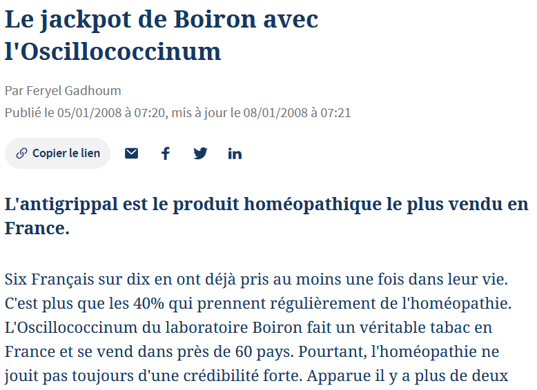
Les vaccins à ARN contre le COVID-19
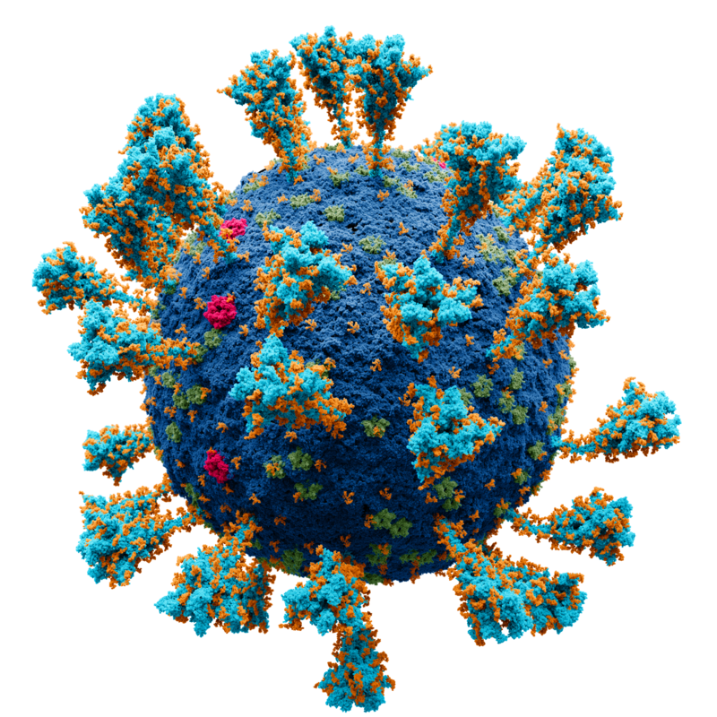
Le COVID-19
- Maladie due à l’infection par le SARS-Cov-2, émergence fin 2019 puis pandémie
- 3ème cause de mortalité en France en 2020 (après cancers et maladies cardiovasculaires)1 \(\rightarrow\) 69 000 décès.
Les vaccins à ARN contre le COVID-19 : comment ça marche ?
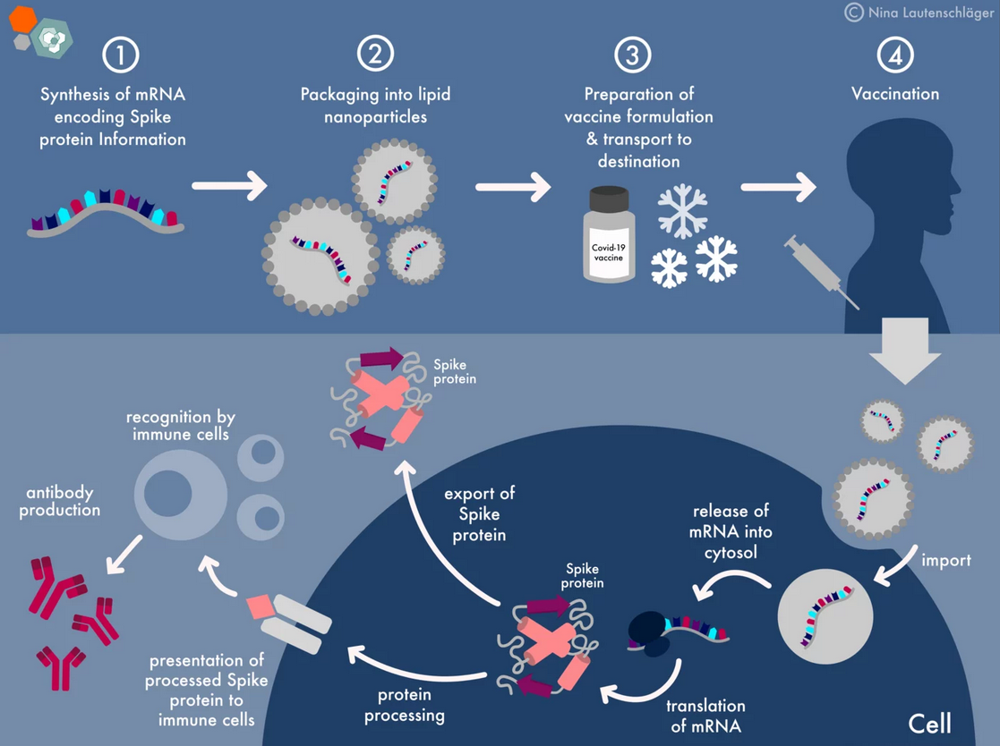
Les vaccins à ARN contre le COVID-19 : est-ce que ça marche ?
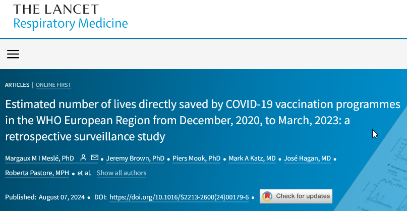 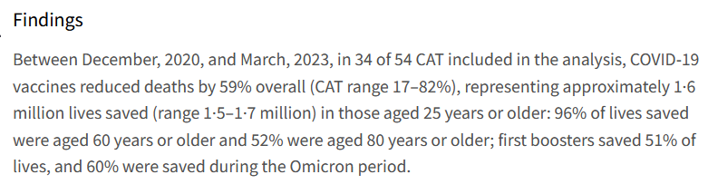
Les vaccins à ARN contre le COVID-19 : méfiance, peur, intox…
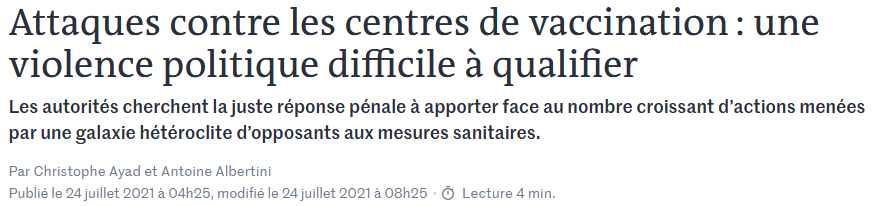
Les vaccins à ARN contre le COVID-19 : méfiance, peur, intox…
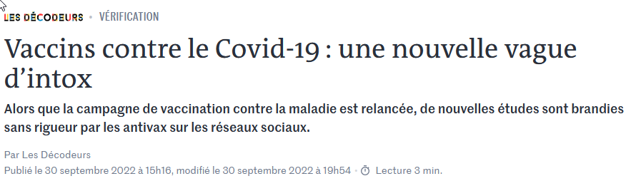
Les vaccins à ARN contre le COVID-19 : méfiance, peur, intox…
Les vaccins à ARN contre le COVID-19 : méfiance, peur, intox…
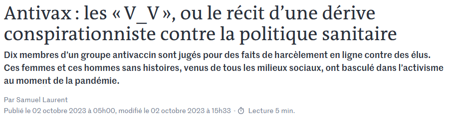
Que retenir de ces 3 exemples ?
- Saignée :
- les plus grands spécialistes de leur époque précipitent la mort d’un des hommes les plus puissant d’un pays par le recours à une pratique médicale dangereuse.
- Oscillococcinum :
- des millions de français sont prêts à payer une somme non négligeable pour ingérer des billes de sucre pour le traitement des symptômes de la grippe.
- Vaccination SARS-Cov-2 :
- un vaccin efficace contre une maladie contagieuse et léthale génère craintes et défiance chez une partie de la population.
Conséquences positives de l’utilisation de traitements inefficaces
- Un traitement, quel qu’il soit, peut rassurer un patient / propriétaire inquiet.
- Par exemple : un placebo peut venir en remplacement d’un traitement antibiotique, parfois réclamé par le patient, si une infection bactérienne est peu probable ou si la probabilité de guérison spontanée est élevée.
Conséquences négatives de l’utilisation de traitements inefficaces
- Dangerosité inhérente de la pratique : dans le cas de la saignée, mort de G. Washington et des autres saignés qui auraient survécu si on n’avait rien fait.
- Perte de chance : quand le traitement inefficace se substitue à un traitement efficace existant.
- Impact économique : pour la partie de l’économie consacrée à la production de traitements inefficaces.
- animaux de production : augmentation injustifiée des coûts de production.
- animaux de compagnie : coûts supportés par les propriétaires
- humains : coûts mutualisés par la sécurité sociale (remboursement de l’homéopathie)
Conséquences négatives de l’utilisation de traitements inefficaces
- Impact écologique : quand la thérapeutique en question doit être prélevée dans le milieu naturel (défenses d’éléphant…)
- Contribution à la propagation de représentations fausses : mémoire de l’eau, médecine quantique…
Traitements inefficaces ou dangereux : comment en arrive-t-on là ?
Source : Anderson Institute
Connaissances / représentations fausses :
- La santé vue comme un équilibre entre 4 humeurs
- Théorie des miasmes
- Principe de similitude et mémoire de l’eau
- Géobiologie et réseau de Hartmann
- Insufflation alvine
- ...
Se convaincre de l’efficacité d’une thérapeutique inefficace…
- Heuristiques et biais
- Heuristique : manière rapide et intuitive pour un cerveau humain de traiter une information, parfois incertaine, pour aboutir à un résultat ou une réponse
- Biais cognitif : de façon plus ou moins systématique, le cerveau humain produit une réponse erronée à un type de question.
- Exemple : Une raquette et une balle coûtent à elles deux 1€10. La raquette coûte 1€ de plus que la balle. Combien coûte la balle ?
Se convaincre de l’efficacité d’une thérapeutique inefficace…
- Illusion de causalité (Matute et al., 2015) / illusion de maîtrise
- Biais cognitifs associés à :
- Taux de guérison spontanée élevé
- Absence de comparaison du traitement à un traitement de référence
- Rareté de l’affection traitée ou de conséquences graves
- Absence d’effet secondaire du traitement (Blanco et al., 2014)
Plausibilité - exemple de l’homéopathie
- Le fait que le principe de similitude soit utilisé pour la conception de tous les traitements implique :
- qu’il existe un mécanisme d’action commun bien compris,
- la compréhension de ce mécanisme est mobilisée pour l’élaboration de nouveaux traitements.
- La substance utilisée pour la fabrication de le teinture mère contient une information censée aider l’organisme à se défendre, mais…
- le principe actif est dilué au point que le traitement ne contient aucune molécule active.
- Hypothèse de la mémoire de l’eau incompatible avec les théories physiques actuelles et jamais démontrée.
- Au vu des connaissances scientifiques actuelles, on ne sait pas comment cela pourrait fonctionner.
Evaluer l’efficacité
- Il se peut qu’un traitement fonctionne même si on ne comprend pas comment.
- Plus souvent, les questions sont, pour une indication précise :
- quel type de traitement ? Médicamenteux, chirurgical…
- quelle molécule dans une classe thérapeutique ?
- quelle dose ?
- quelle durée ?
Evaluer l’efficacité
Les questions qu’on se pose sont de nature causale, par exemple :
- est-ce que le traitement \(A\) (molécule, forme galénique, dose, modalités d’administration…) cause la guérison ?
- est-ce que le facteur de risque \(B\) cause la survenue de la maladie ?
Revient à se poser la question de ce qui se serait passé si à la place du traitement \(A\), on avait administré un autre traitement de référence (placebo ou autre).
\(\Rightarrow\) Aucune évaluation possible sans comparaison !!!
Problème fondamental de l’évaluation de la causalité : un même individu ne peut pas à la fois recevoir un traitement et son alternative !
- Il faut des dispositifs expérimentaux et méthodes d’analyse adaptés pour mettre en évidence une relation causale.
Les pièges de l’évaluation
- Différence association statistique / effet causal
- Exemple de l’évaluation d’un traitement contre le COVID :
- On veut savoir si un traitement réduit la mortalité liée au COVID
- biais si l’allocation du traitement fonction de l’âge du patient.
Le paradoxe de Simpson
- On compare 2 traitements contre le COVID-19 sur la base du taux de mortalité à l’issue du traitement.
- On obtient le tableau suivant :
| Traitement | N traités | N morts | P mort |
|---|---|---|---|
| A | 370 | 145 | 0.392 |
| B | 630 | 266 | 0.422 |
- On réanalyse les données, mais en tenant compte de l’âge des patients :
| Traitement | Age | N traités | N morts | P mort |
|---|---|---|---|---|
| A | < 50 | 93 | 4 | 0.043 |
| B | < 50 | 26 | 0 | 0.000 |
| A | > 50 | 277 | 141 | 0.509 |
| B | > 50 | 604 | 266 | 0.440 |
Le paradoxe de Simpson
- Lorsqu’on analyse l’effet du traitement sur l’ensemble de l’échantillon, \(A\) semble le plus efficace.
- Lorsqu’on prend l’âge des patients en compte, \(B\) semble le plus efficace.

{kind=link}
- L’âge est un facteur de confusion : facteur qui agit à la fois sur l’exposition (ici traitement évalué) et sur la variable d’intérêt (ici mortalité).
Implication pour la conception d’études
- Les conclusions d’une analyse statistique peuvent être différentes selon les variables prises en compte.
- Nécessité de bien poser les hypothèses biologiques en amont \(\rightarrow\) synthèse bibliographique.
- Conception du protocole expérimental :
- bien recueillir les données nécessaires selon les hypothèses
- utiliser un dispositif adapté à la question (comparaison, randomisation…)
- Utiliser des méthodes d’analyse appropriées.
Essais contrôlés randomisés
L’essai randomisé contrôlé1 est le dispositif expérimental le plus adapté à l’évaluation de traitements.
Principes :
- Comparaison d’au moins 2 traitements.
- Allocation des traitements comparés au hasard : garantit la comparabilité des groupes recevant les différents traitements.
- Idéalement, les participants (éleveurs / propriétaires), voire les expérimentateurs, ne savent pas quel est le traitement reçu.
Pourquoi différentes études donnent des résultats différents ?
Variabilité biologique, imprécision des mesures : les résultats peuvent varier d’une étude à l’autre.
Une valeur de \(p\) inférieure à 0,05 est habituellement utilisée pour conclure à un effet significatif d’un traitement.
Qu’est-ce qu’une \(p-value\) ? Illustration par un exemple.
On veut tester l’effet d’un aliment \(A\) sur la production laitière de vaches.
- On compare les productions laitières de vaches recevant l’aliment \(A\) à celles de vaches ne recevant pas cet aliment.
- On fait l’hypothèse qu’il n’y a pas de différence de production laitière entre les 2 groupes.
- La p-value pour l’effet de l’aliment \(A\) est la probabilité d’observer les valeurs mesurées dans notre étude s’il n’y avait effectivement pas de différence entre les groupes.
Pourquoi différentes études donnent des résultats différents ?
- On définit habituellement un seuil (\(\alpha\)) en deçà duquel la différence est déclarée significative.
- Quand \(\alpha = 0,05\) : en l’absence de différence entre traitements, on va conclure à l’existence d’un effet significatif dans 5% des cas,
- \(\rightarrow\) probabilité de faux positif

- Autrement dit, en l’absence d’effet, si on refaisait 100 fois notre expérience on trouverait un effet significatif ~5 fois.
- On sait que la littérature scientifique contient beaucoup de faux positifs.
- Voir par exemple Ioannidis, 2005; Ritchie, 2020
La médecine factuelle pour s’y retrouver
- Qu’est-ce que la médecine factuelle :
- Traduction de evidence-based medicine = EBM.
- Sackett (1996) : Evidence based medicine is the conscientious, explicit and judicious use of current best evidence in making decisions about the care of the individual patient. It means integrating individual clinical expertise with the best available external clinical evidence from systematic research.
- En français : médecine factuelle, médecine fondée sur les preuves
- Objectif : apporter la meilleure réponse à une question clinique précise en trouvant puis en synthétisant les informations fiables disponibles.
La médecine factuelle - étapes
- Démarche en 5 étapes :
- Formuler une question précise
- Trouver les meilleures données / informations pour répondre à cette question
- Evaluer les information trouvées
- Intégrer le résultat de l’évaluation à sa pratique
- Evaluer la performance
- En résumé : utilisation de la littérature scientifique pour répondre à une question clinique.
- Plus de détails en TD
La médecine factuelle - exemple
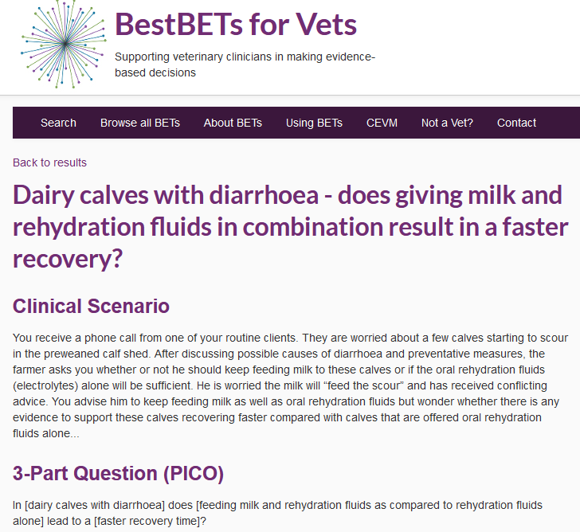
Médecine factuelle et compétences à enseigner
- Macro-compétence listée dans le référentiel d’activité professionnelle et de compétences à l’issue des études vétérinaires.

Médecine factuelle et code de déontologie
Sous-section 2 : Dispositions applicables à tous les vétérinaires
- Devoirs généraux du vétérinaire (et article article R242-33 du code rural et de la pêche maritime.)
- XII - Le vétérinaire acquiert l’information scientifique nécessaire à son exercice professionnel, en tient compte dans l’accomplissement de sa mission, entretient et perfectionne ses connaissances.
- Devoirs généraux du vétérinaire (et article article R242-33 du code rural et de la pêche maritime.)
Sous-section 3 : Dispositions propres à différents modes d’exercice
- Devoirs envers les clients (et article R.242-48 du code rural et de la pêche maritime.)
- II - Il formule ses conseils et ses recommandations, compte tenu de leurs conséquences, avec toute la clarté nécessaire et donne toutes les explications utiles sur le diagnostic, sur la prophylaxie ou la thérapeutique instituée et sur la prescription établie, afin de recueillir le consentement éclairé de ses clients.
- Devoirs envers les clients (et article R.242-48 du code rural et de la pêche maritime.)
Médecine factuelle - au-delà des exigences de formation et déontologiques
- Essentiel de se poser les questions de :
- la validité des informations
- l’efficacité de sa pratique
- La médecine factuelle comme approche pour apporter les meilleures réponses possibles à des questions concrètes.
Pour aller plus loin
- Polycopié de cours
- Support de TD
- EBVM toolkit : boîte à outils pour aider les vétérinaires praticiens à mettre en oeuvre la démarche médecine factuelle. En anglais.
- BestBETs for Vets : site mis en ligne par le Centre for Evidence-based Veterinary Medicine de l’université de Nottingham. Contient de nombreux exemples. En anglais.
- Collaboration Cochrane : revues systématiques de bonne qualité sur des questions de médecine humaine.
- Avis de l’académie vétérinaire de France sur l’homéopathie.

Comment savoir ?